行程速览
三天一条由内向外的人文线：第一天泡进老城南的烟火，第二天上钟山读六朝与民国，第三天从总统府走到玄武湖收尾。节奏松，地铁串起全部，基本不走回头路。
Day 1 · 落进城南的烟火
关键词：青砖小瓦马头墙、六百年瓮城、桨声灯影。抵达后不赶路，把老城南从白天逛到夜里。
怎么去南京（上海出发）
上海虹桥 / 上海站 → 南京南站，G 字头最快约 1 小时出头，多数车次 1.5 小时内，二等座约 135–230 元（以 12306 为准）。班次密如公交，不用提前太久抢票，临时起意也走得成——正适合日期待定的这趟。
上海 → G2 京沪高速 → 南京，全程约 300 公里、4 小时上下。南京市内对苏A以外车牌无常态限行，但老城南停车位紧张，抵达后建议车停酒店，全程地铁出行。
地铁 1/2/3/4 号线覆盖全部行程要点，支付宝/微信乘车码直接刷。南京南站是枢纽，去夫子庙（3 号线）、钟山（2 号线）、玄武湖（1 号线南京站）都很顺。
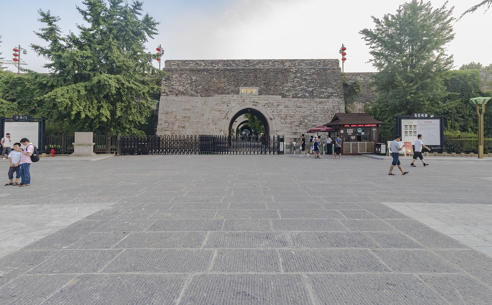
老门东走到秦淮河的灯影里
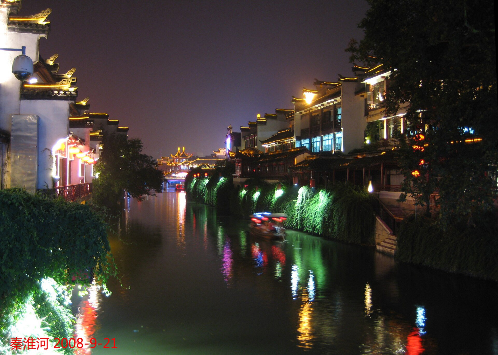
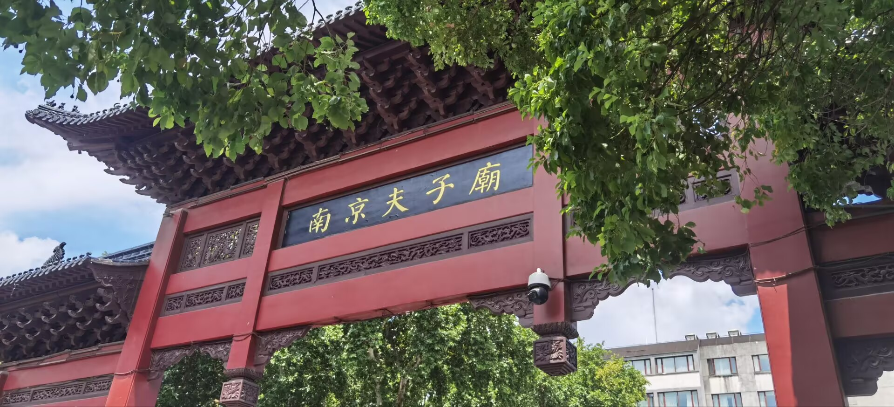
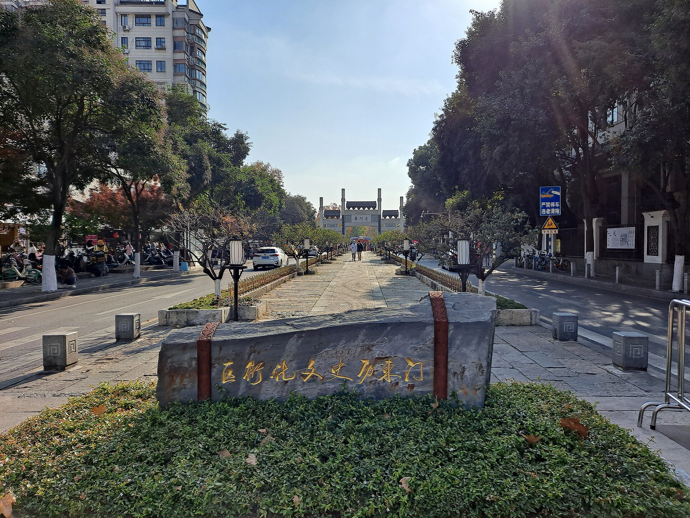
Day 2 · 上钟山，读民国
关键词：392 级台阶、石象路秋色、颐和路的梧桐。这一天从六朝的陵寝走到民国的公馆，是整趟行程密度最高的一天。
从中山陵到颐和路的一天
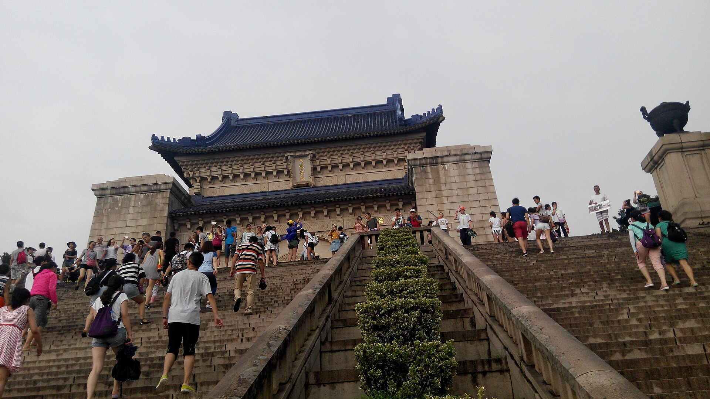
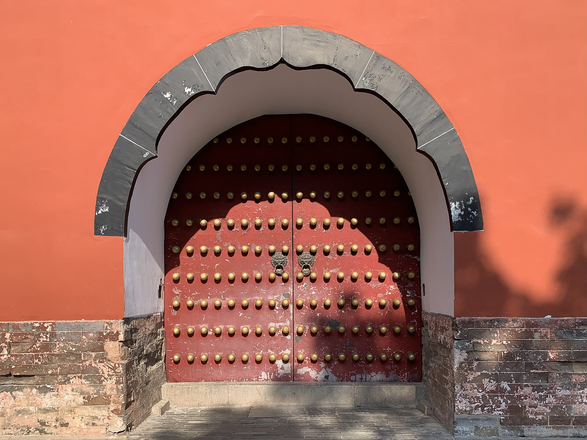
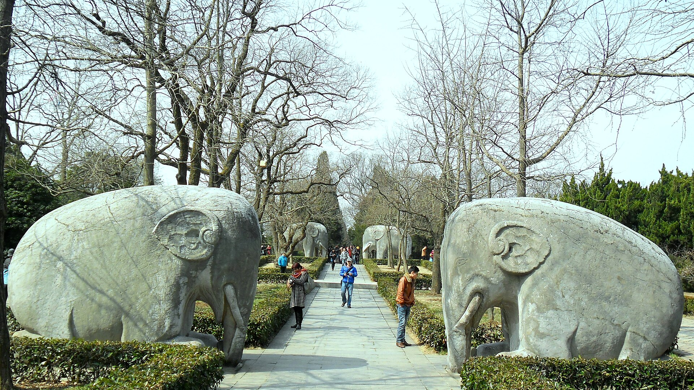
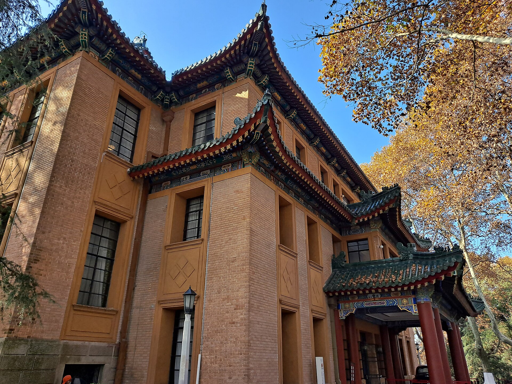
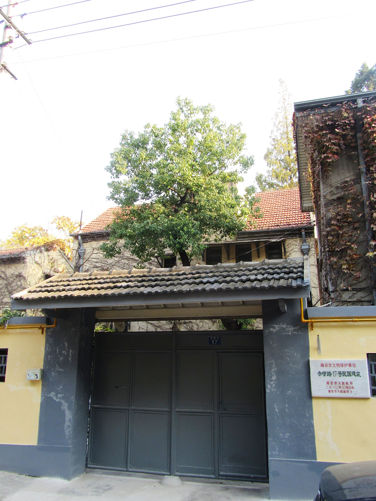
Day 3 · 从总统府走到玄武湖
关键词：中国近代史、南朝古刹、明城墙上看湖。上午的行程连成一条直线，下午从湖边从容返程。
近代史、古寺与一湖碧水
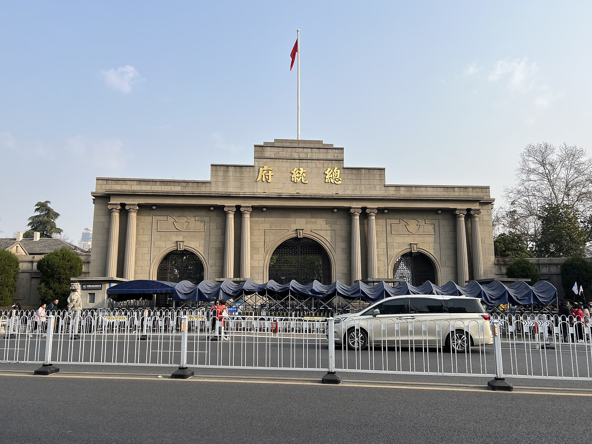
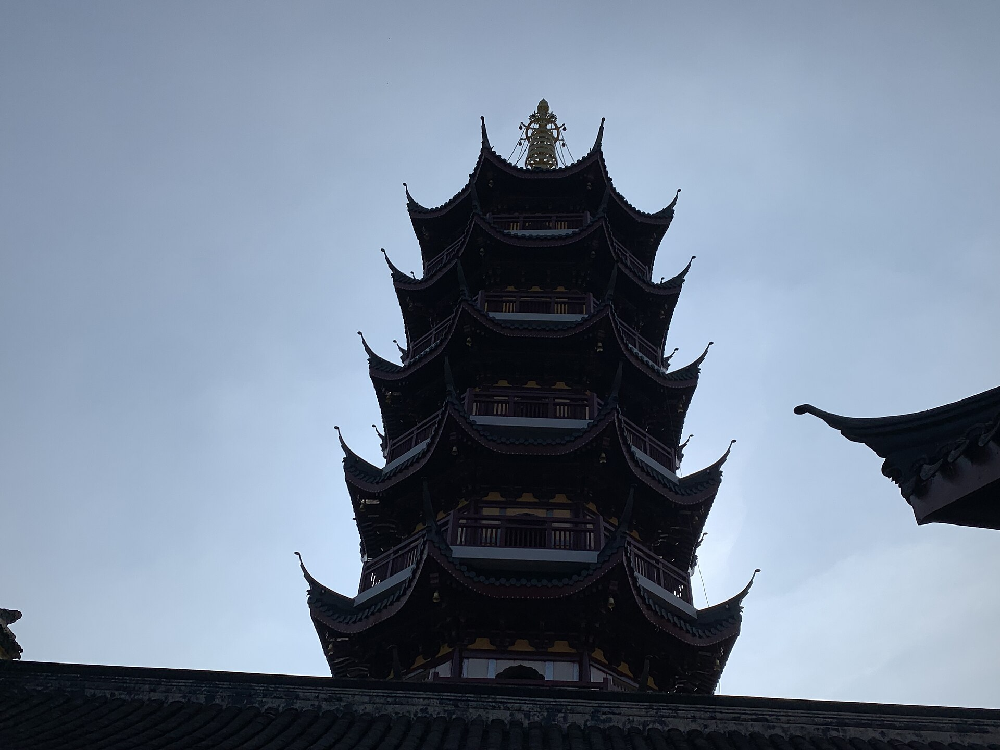
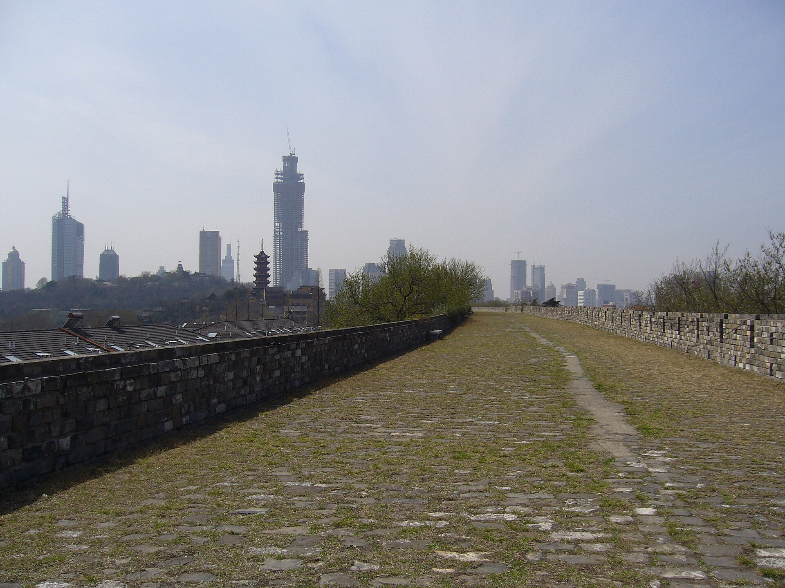
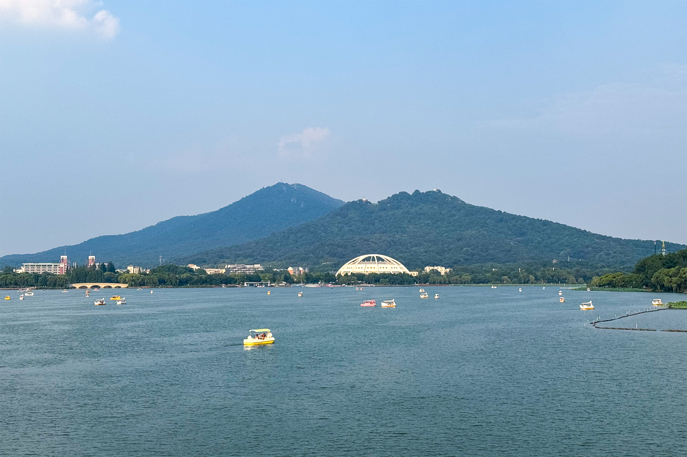
住在哪里
这趟行程的要点都在地铁沿线，两个思路：住老城南守着夜秦淮，或住新街口当全网枢纽。价格为常规参考区间，以预订平台实时价为准。
秦淮河边的高层景观酒店
选河景房推窗就是画舫与灯笼，夜游秦淮散场步行即回。Day 1 全程不用打车，住得越近，夜色越从容。
新街口商圈连锁酒店
1/2 号线交汇的市中心，去钟山、夫子庙、玄武湖都是三站以内。商业配套成熟，深夜觅食不愁，适合怕折腾的行程。
老门东周边设计民宿
住在青砖黛瓦的巷子里，清晨的老街没有游客，只有遛鸟的街坊和豆浆香气。适合喜欢"住进老城"感觉的旅行者。
玄武湖畔湖景酒店
第三天动线最顺的选择：湖在楼下，南京站在隔壁，退房后拖着行李也走得动。适合把返程安排在傍晚的走法。
金陵味道
南京的味道是"鸭"做主语的：盐水鸭、鸭血粉丝、鸭油烧饼——再配一碗糖粥藕收尾。照着吃不会错。
夫子庙—贡院街—老门东连成的美食动线：白天看街，晚上吃灯影。排队最长的店往往最值得（真实照片 · 秦淮河）。
盐水鸭桂花鸭
皮白肉嫩、咸鲜带桂花香。老字号认韩复兴，社区鸭子店认排队长的——南京人论"斩鸭子"从不含糊。
鸭血粉丝汤街头标配
鸭血、鸭肠、鸭肝配粉丝，汤头清鲜。连锁品牌"回味"出品稳定，老门东小店更地道。
牛肉锅贴李记清真馆
七家湾锅贴的代表，底脆汁多、牛肉馅带甜。草桥清真牛肉锅贴扁食店也是老牌。
汤包鸡鸣汤包 · 尹氏
褶子朝下的"倒蒸"鸡鸣汤包皮薄卤足；尹氏鸡汁汤包连锁多，一笼配一碗鸭血粉丝就是一餐。
皮肚面项记 · 易记
大肉、皮肚、猪肝、香肠铺满一碗的三鲜面，是南京人午餐的排面。明瓦廊一带老店集中。
赤豆元宵莲湖糕团店
红豆沙熬得稠稠的，小元宵软糯，撒一勺桂花——夫子庙的甜蜜收尾。
梅花糕老门东
梅花模子烤出来的米糕，顶上嵌小圆子和红枣，趁热咬开都是软糯的甜。
鸭油酥烧饼小郑酥烧饼
用鸭油起酥的烧饼，咸口葱香、甜口糖芯，刚出炉的最好吃，老门东常年排队。
活珠子勇敢者菜单
南京独有的街头限定，鸡胚蛋的独特口感，敢试是勇者，不敢看一眼也是体验。
糖粥藕蓝老大
红糖糯米藕与粥一起熬，甜糯的 old-school 味道，科巷、老门东都能找到。
雨花茶 · 盐水鸭礼盒伴手礼
带一罐雨花茶、一只真空盐水鸭回去，是金陵最体面的手信；夫子庙商圈都能买到正规品牌。
素斋面鸡鸣寺
古寺里的一碗素面，香菇面筋清汤，配着钟声吃完，是 Day 3 最安静的午餐。
锅贴、烧饼、梅花糕一条街，Day 1 下午就在这解决。
游客最多但选择最全，配合夜游秦淮刚刚好。
本地人的小吃腹地：皮肚面、鸭子店、苍蝇馆子。
藏在新街口身后的市井菜市场美食街，鸡蛋汉堡、藕饼、糕点都很能打。
实用贴士
日期待定，所以更要把功课做在前面——预约、闭馆日和天气这三件事，决定了这趟旅行的顺手程度：
预约优先级
中山陵免费但必须提前实名预约（官方公众号，旺季紧张）；总统府、美龄宫、科举博物馆可现场或线上购票；南京博物院免费需抢约。定下日期第一件事：约中山陵。
避开周一
总统府周一闭馆，中山陵墓室周一维护，博物院周一仅上午开放。行程尽量避开周一；撞上了就把 Day 2 / Day 3 内容对调。
季节选择
南京春秋最舒服：3–5 月鸡鸣寺樱花与城墙新绿，10–11 月石象路秋色是全年巅峰。夏季闷热（"火炉"不是白叫的），冬季湿冷，行前一周盯准天气预报再锁日期。
市内交通
地铁覆盖全部行程点，支付宝/微信乘车码直接刷闸；机场（禄口）远在城南以外，但本行程高铁直达南京南，无需飞机。景区观光车联票在钟山景区最划算。
避坑指南
夫子庙周边搭讪"免费拍照""看相算命"一律不理；门口拉客的一日游、低价团不参加；买盐水鸭认准正规老字号门店而非景区摊点。
节奏建议
钟山景区面积大、步行多，Day 2 尽量早出发；秦淮夜游留给非周末更从容；南京旅游投诉与咨询热线以"南京文旅"官方渠道为准。